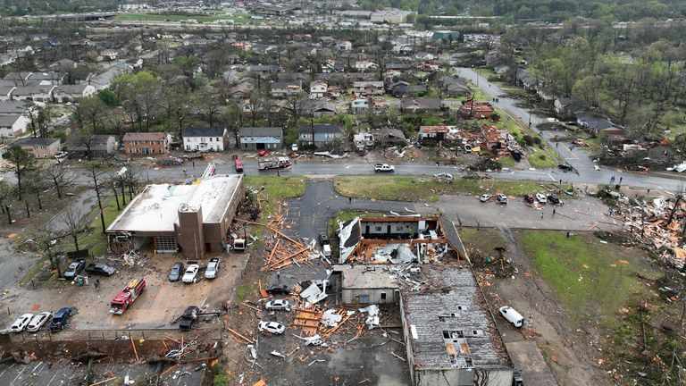

As dozens of twisters ravaged through America's South and Midwest, causing a death toll of 26, survivors of the tornado have shared heart-wrenching accounts of their struggle to survive. Approximately 420,000 individuals continue to be without electricity, and towns have been left in a state of disarray, with many being unrecognizable.

Deadly tornadoes of immense power tore through the Midwest and Southern regions of America, leaving a trail of destruction that claimed the lives of a minimum of 26 individuals and left hundreds of thousands without electricity.
The fierce tornadoes caused extensive damage to homes and businesses, shattered trees, and devastated neighborhoods in a vast area spanning at least eight states. The fatalities comprise at least nine people from a single county in Tennessee, four from Wynne, Arkansas, three from Sullivan, Indiana, and four from Illinois.
Additional deaths due to the storms that hit between Friday night and Saturday were recorded in Alabama and Mississippi. In addition, one individual died near Little Rock, Arkansas, where officials from the city reported that over 2,600 buildings were in the path of a tornado.
The government has stated that the system would only be utilized in critical situations that endanger life, such as severe weather events like the wildfires and flooding observed last year. This system has been under development for roughly three years and has the capability to send alerts to designated regions, irrespective of their size. For instance, an alert can be issued to all residents of a village in the path of an impending river overflow.
The roof of the high school in Wynne, a town of 8,000 people located 50 miles west of Memphis, Tennessee, was torn off and its windows were blown out when residents woke up on Saturday.
Massive trees with reduced-to-nub stumps were lying on the ground. Homes and businesses were plagued by shattered walls, windows, and roofs.
Clothing, insulation, toys, splintered furniture, and a pickup truck with broken windows were among the debris that was strewn across the wreckage of homes and on lawns.
According to Ashley Macmillan, she, her husband, their kids, and their dogs were gathered in a tiny bathroom as a tornado passed, "praying and saying farewell to each other, because we thought we were dead," and "saying goodbye to the pets." They weren't wounded, but a falling tree severely destroyed their house.
We felt the house trembling and heard loud noises and rattling crockery. Then it simply became tranquil," she remarked.
Bulldozers and chainsaws were used by employees to clear the area, and power was already being restored by utility crews.
According to Patrick Sheehan, director of the Tennessee Emergency Management Agency, nine persons passed away in McNairy County, Tennessee, which is located east of Memphis.
According to Adamsville mayor David Leckner, residences and residential areas have sustained the most of the damage.
Gov. Bill Lee traveled to the area on Saturday to console the locals and inspect the damage.